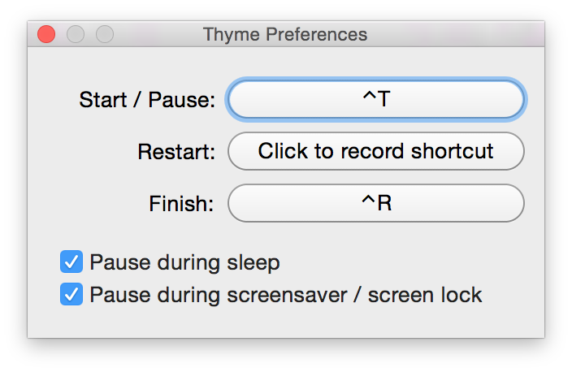
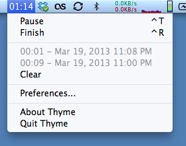

A timer for OS X. As simple as that.
Use Thyme to control how much time you spend on your tasks.
Thyme remembers the time you've spent when using it, so you don't have to.


New in v0.5 Pause during sleep, screensaver or screen lock.
New in v0.5 Export data to JSON.
Thyme supports four different AppleScript commands: start, stop, pause and toggle. Here's how:
tell application "Thyme"
start
end tell
MIT Licensed — © 2010 - 2015 João Moreno